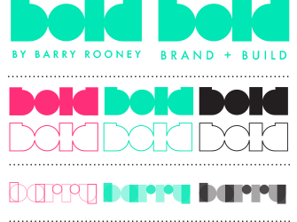
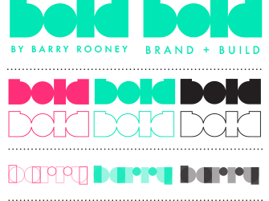

THE BOLD LOGO SHOULD BE USED AS THE MAIN IDENTITY FOR MY BRAND. BARRY ROONEY AS A BRAND HADN’T WORKED AND I HAD CREATED BOLD ALOST TWO DECADES AND PURCHASED A DOMAIN NAME WHICH I CAN NOW USE.
THE SOLID BLOCK SHOULD BE USED IN ALL PRIMARY INSTANCES. WHERE THE WORDMARK IS USED IN SMALL CASES THERE SHOULD BE NO SUB-MARK IE THE VERSIONS WITH, ‘BY BARRY ROONEY’ &‘BRAND + BUILD’ MUST ONLY BE USED AS A LARGE LOGO. WHEN USED ON FILLS THE OUTLINE VERSION CAN ALSO BE USED.
IT IS CRUCIAL THAT AN ADDITION SIGN ie ‘+’ IS USED IN PLACE OF AN AMPERSAND.
THE OUTLINE VARIATION MAY BE USED AS A WATERMARK OR AS AN ACCENT / SECONDARY MARK.
THE BARRY WORDMARK IS NOT THE MAIN WORDMARK BUT CAN BE USED ON CONTACT FORMS ETC.
THE WORDMARK IS AN IMAGE AND NOT A TYPEFACE.
THE WORDMARK CAN BE USED IN CONJUNCTION WITH THE BRAND COLOURWAYS.
THE WORDMARK MUST NOT BE MANIPULATED DISPROPORTIONATELY